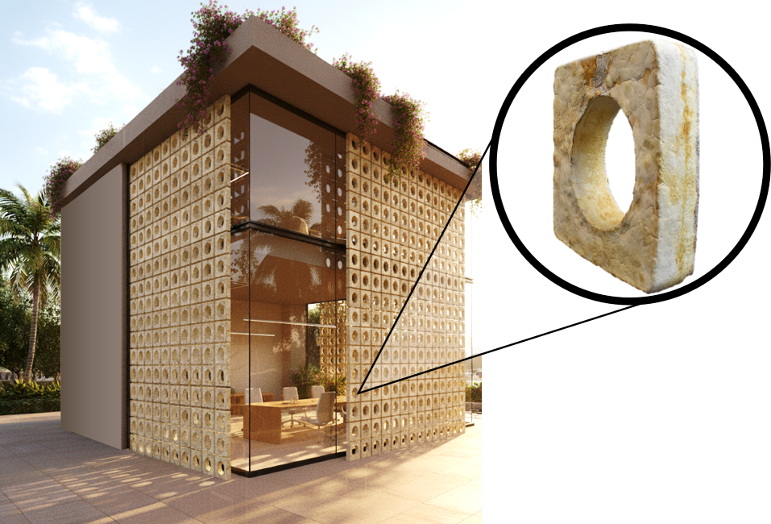
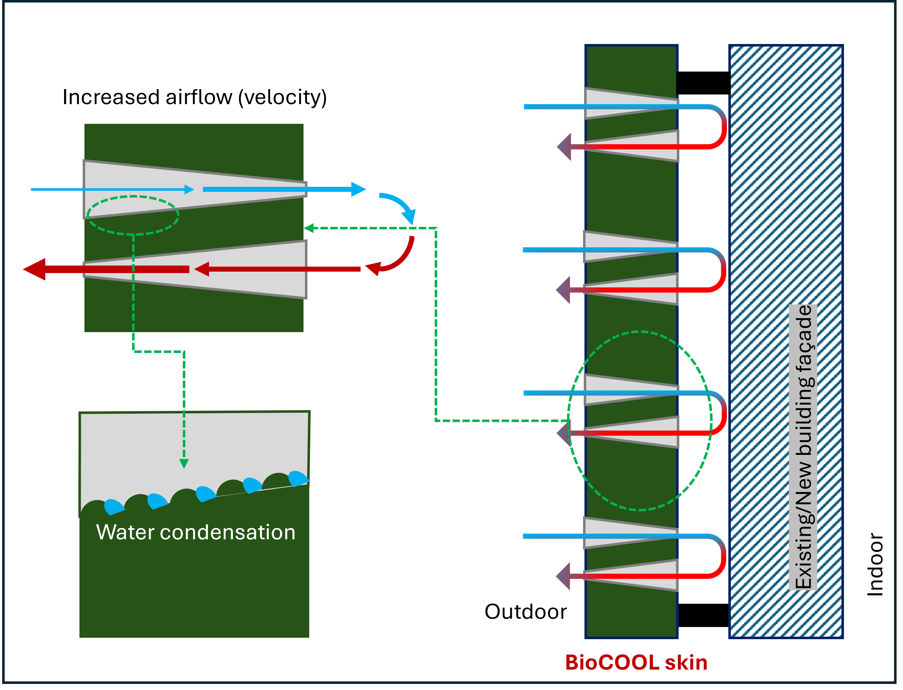
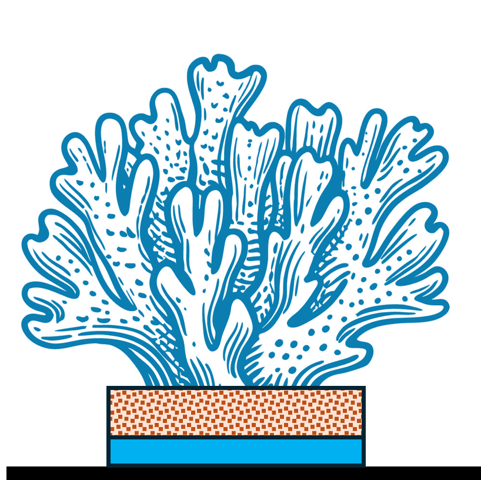
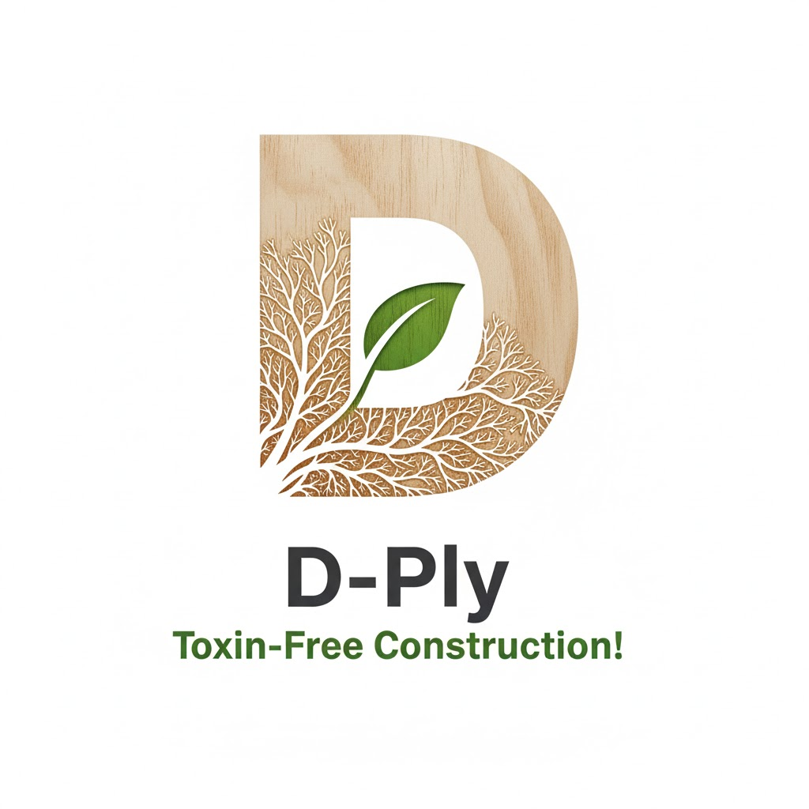
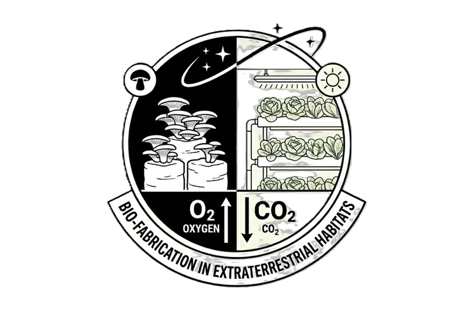
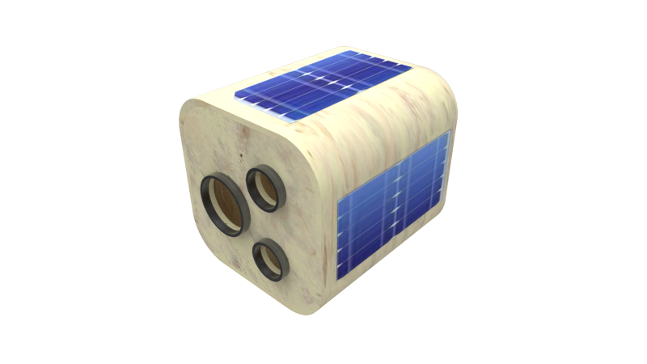

About Me
As a building physicist, I pioneer bio-intelligent building systems and bio-building physics. These interdisciplinary approaches harness living materials, Artificial Intelligence (AI), biotechnology, and vernacular design to engineer passive, self-regulating structures for extreme environments—ranging from arid deserts and polar outposts to transplanetary habitats. I advance the frontiers of sustainable, net-zero technologies through extensive expertise in Engineered Living Materials (ELM)—specifically Mycelium-Based Composites (MBC) and Bacterial Cellulose (BC)—combined with AI-driven bio-digital fabrication and rigorous building performance simulation.
Featured Research

Bio-Jaali: Passive Cooling
Carbon-negative building skins utilising mycelium-based composites for extreme climates.

BioCOOL: Biomimetic Passive Cooling
Carbon-negative biomimetic building skins utilising mycelium-based composites for extreme climates. Part of the UTS Bio-X Cluster.

MYCORAL
Exploring the symbiotic potential of mycelium-based composites in coral restoration scaffolds.

D-Ply: Engineered fungal board
Developing bio-fabricated engineered fungal board for furniture and construction.

SpaceBioFab: Bio-fabrication in Extra-terrestrial Habitats
Developing bio-fabricated materials and structures from in-situ spacing farming waste and fungi.

MycoSAT
Developing bio-fabricated satellites (CubeSats) from engineered living materials.